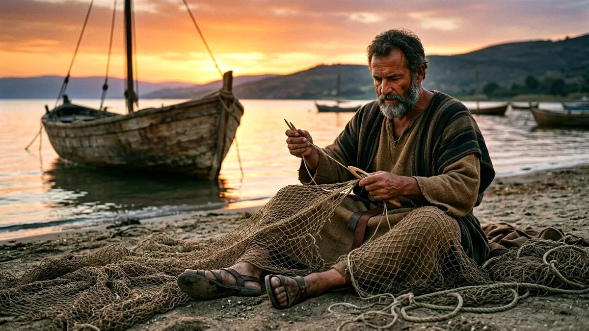

「일상동행 제자도」 —
교실을 넘어 일상에서 걷는 제자훈련
4권 28주 과정의 제자훈련 교재입니다. 정답을 받아 적는 공부가 아니라 스스로 질문을 만들어 오고, 월요일의 일터와 저녁의 가정에서 말씀을 살아내며, 손 안의 스마트폰으로 한 주를 함께 걷습니다.
교재를 펼쳐 봅니다
「일상동행 제자도」 제1과 다섯 쪽을 인쇄용 A4 그대로 옮겼습니다. 쪽을 누르면 크게 볼 수 있습니다.
왜 다시 제자도인가?

출퇴근길이나 이동 중에 본문의 배경을 귀로 먼저 만나보세요.
CODE
이 경험은 '제자도'가 무엇인지에 대해 우리에게 어떤 정의를 내려줄까요?
자신의 현재 삶의 자리에 더 밀접한 트랙을 선택하여 솔직한 마음을 나누어 보세요.
QR을 찍어 이번 주 암송 구절을 스마트폰 잠금화면으로 받으세요.
CODE
Book 1 뿌리 · 7과 · 과마다 다섯 쪽 · 교재에는 QR 오디오 가이드와 잠금화면 암송 카드가 함께 들어 있습니다
무엇이 다른가요
스스로 여는 네 걸음 질문
발견 → 해석 → 원리 → 적용, 네 걸음의 질문으로 본문을 스스로 읽습니다. 훈련생은 My Question Box에 자기 질문을 적어 와 함께 나눕니다.
일터·가정 듀얼 트랙
적용 질문을 일터·사회생활과 가정·개인 관계 두 갈래로 나눠 내 삶에 가까운 쪽을 고릅니다. 나눔 질문의 절반 이상이 일상의 자리를 향합니다.
스마트 라이프 미션
사진·음성 기도·디지털 디톡스·격려 문자 같은 한 주 미션, 3분 오디오 가이드, 잠금화면 암송 카드로 모임 밖의 엿새를 잇습니다.
뿌리에서 열매까지
한 권에 7주씩, 나무가 자라는 순서를 따라 갑니다.
뿌리
복음과 새로운 시작
십자가 복음과 은혜의 정체성을 세우고, 스스로 묵상하고 질문하는 기본기를 익힙니다.
줄기
내면과 매일의 동행
말씀과 기도, 내면의 회복으로 매일 주님과 동행하는 습관을 세웁니다.
가지
일터·가정의 관계와 회복
일터와 가정, 가까운 관계 속에서 말씀대로 살고 회복하는 길을 배웁니다.
열매
세상 속 사명과 재생산
삶의 자리에서 사명을 감당하고, 또 다른 제자를 세우는 사람으로 자랍니다.
80분, 여섯 단계로 진행합니다
모든 과가 같은 틀이라 인도자도 훈련생도 금방 익숙해집니다.
| 시간 | 단계 | 하는 일 |
|---|---|---|
| 5분 | 스마트 오프닝 | 일상 공감 이야기와 마음 열기 질문. 3분 오디오 가이드로 미리 듣고 옵니다. |
| 20분 | 본문 관찰과 발견 | 발견·해석 질문으로 본문을 읽고, 각자 만들어 온 My Question을 나눕니다. |
| 10분 | 코어 인사이트 | 핵심 원리 질문과 한 문단의 핵심 정리로 그날의 진리를 붙듭니다. |
| 30분 | 듀얼 트랙 일상 나눔 | 일터 트랙과 가정 트랙 가운데 골라 솔직하게 나눕니다. 모임의 중심입니다. |
| 10분 | 스마트 라이프 미션 | 이번 주 미션과 주간 묵상 체크표를 정합니다. |
| 5분 | 동행 기도와 암송 | 함께 기도하고, 암송 구절을 잠금화면에 담아 갑니다. |
인도자는 퍼실리테이터
가르치는 사람이 아니라 질문을 열고 나눔을 돕는 사람입니다.
나눔은 방 안에
모임에서 나눈 이야기는 밖으로 옮기지 않습니다. 비밀 보장이 솔직한 나눔을 지킵니다.
단톡방 응원단
인도자는 주중 단톡방에서 미션 인증에 반응하며 한 주를 응원합니다.
비교하고, 검토하고, 다시 고쳤습니다
대표 교재 다섯 가지 비교
국내에서 널리 쓰이는 제자훈련 교재 다섯 가지를 나란히 놓고, 각 교재의 장점과 오늘의 성도에게 빈 자리를 살폈습니다.
두 방향의 검수
신학·목회·교육의 눈과 일상 적용·사용성의 눈, 두 검수자가 28과 전체를 읽고 고칠 점을 짚었습니다.
전 과 통과
죄의 정의를 더 깊게, 디지털 디톡스를 현실에 맞게처럼 짚은 부분을 고쳐 다시 검수하고, 네 권 모든 과가 통과했습니다.
중고등부 청소년을 위한 판
같은 흐름을 청소년의 학교·가정·친구 관계에 맞게 다시 쓰고 있습니다. Book 1 제1과 청소년판 샘플이 나왔고, 차례로 이어서 준비합니다.